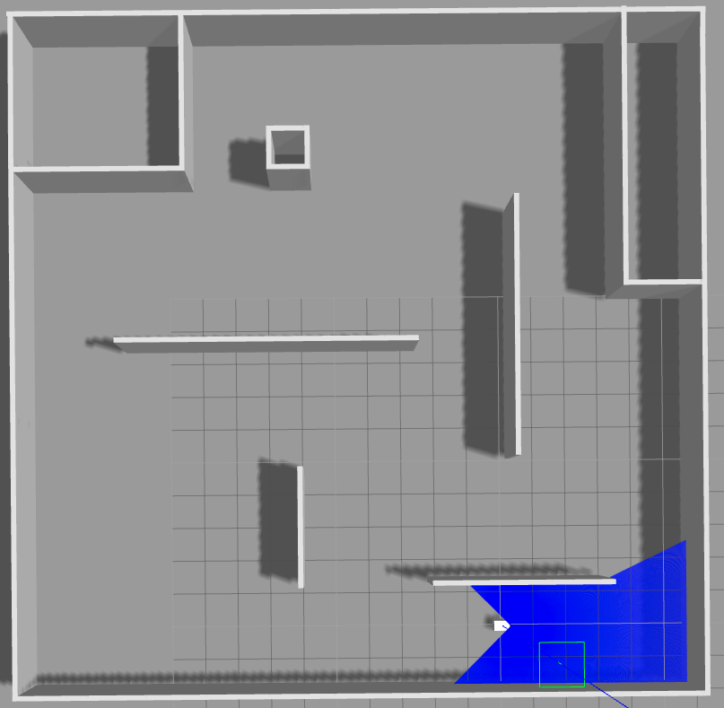
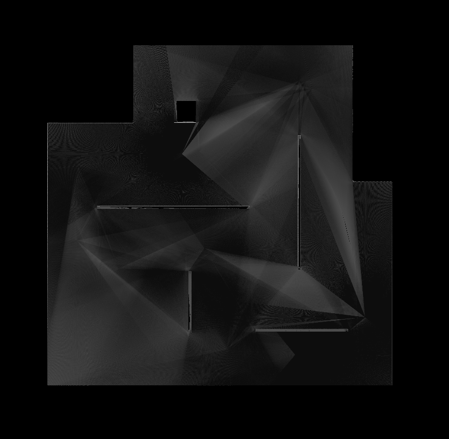
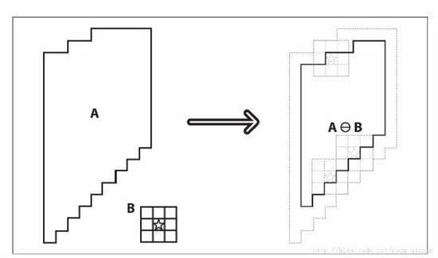
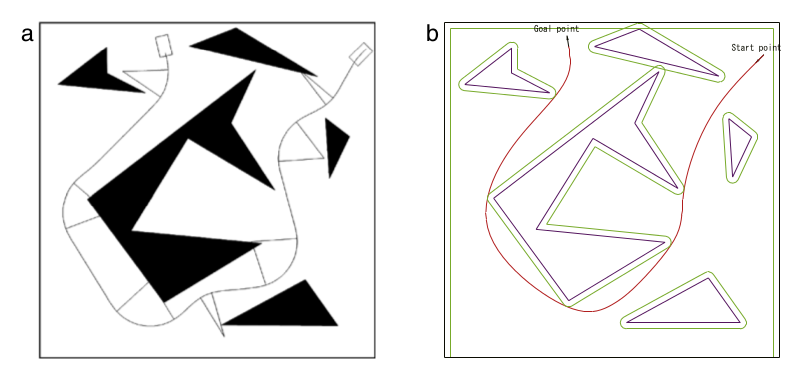
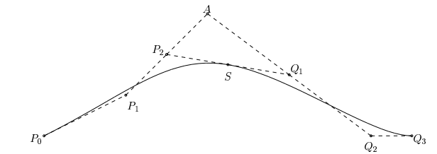

定位方法的应用及对生成的地图操作
同步定位与地图构建(Simultaneous localization and mapping或SLAM)是机器人从未知的地点出发，在运动过程中通过激光雷达反复观测到的环境特征(如墙角，柱子等)定位自身位置和姿态，在根据自身位置增量式的构建地图，从而达到定位和地图构建的目的。SLAM用于解决以下问题：在建立地图模型或改进已知地图的同时，在该地图模型上定位机器人。它回答了”这个世界长什么样“以及”我在哪“的问题，是移动机器人自主导航的基础。
以Linux系统下构建的3D仿真环境(该仿真环境真实模拟实际环境，激光雷达照射以及移动机器人硬件模块运动控制)展示SLAM应用及使用情况效果.Figure1为模拟真实30m*30m的环境地图，其中白色部分为移动机器人，蓝色部分为移动机器人激光雷达光线组成的区域，灰色部分为地面和墙体。启动SLAM绘图模块，启动手动遥控令移动机器人绕环境旋转一周，使得激光雷达点照射的区域尽可能充分，绘制的灰度地图如Figure2.
但对于导航模块，灰度地图并不适合在地图中搜寻两点之间的路径，此时需要先对灰度图进行一定处理。其基本操作为二值化以及地图腐蚀膨胀。二值化的目的在于对地图灰度值在某个阈值范围内的像素点表示该点可通过，在阈值之外的表示该点不可通过，如此区分了移动机器人在地图上的可走及不可走区域，依此可进行路径搜索；而考虑到移动机器人自身的半径，若要使得移动机器人在地图中以某个像素点的方式呈现，需将地图中的不可走区域膨胀机器人的半径大小，此即数学形态学的腐蚀操作，即原图中高亮部分被腐蚀。其原理如Figure3，A代指原始像素地图，B是腐蚀内核，腐蚀就是将图像与核进行卷积，其中核可以是任意的形状和大小，它拥有一个单独定义出来的参考点，我们称之为锚点。腐蚀就是求局部最小值的操作，核B与图形卷积，即计算核B覆盖的区域的像素点的最小值，并把这个最小值赋值给参考点指定的像素。这样就会使图像中的高亮区域逐渐减少，暗色区域逐渐增加。公式表示为:
$ g(x,y) = Erode[f(x,y),B] = min{f(x+dx,y+dy)-B(dx,dy)|(dx,dy)\in B} $
其中，g(x,y)为腐蚀后的灰度图像，f(x,y)为原灰度图像，B为结构元素。腐蚀运算是由结构元素确定的邻域块中选取图像值与结构元素值的差的最小值。
经过系列处理，最终生成的可用于移动机器人导航的地图如Figure4.

Figure1仿真模拟实际环境

Figure2 SLAM绘制灰度图

Figure3 腐蚀操作原理
Figure4 导航用地图
导航算法的设计与应用。
基于启发式搜索算法A星算法进行路径搜索和跳点算法(Jump-Point-Search或JPS)优化运行效率，生成导航路径。
A星算法是一种在图形平面上有多个节点的路径，求出最低通过成本的算法，常用于人工智能以及游戏中的最优路径搜索。该算法综合了BFS(Breadth First Search)和Dijkstra算法的优点：在进行启发式搜索提高算法效率的同时，可以保证找到一条最优路径（基于评估函数）。在此算法中，如果以 g(n)表示从起点到任意顶点n的实际距离，h(n)表示任意顶点n到目标顶点的估算距离（根据所采用的评估函数的不同而变化），那么 A*算法的估算函数为：f(n) = g(n) + h(n).这个公式遵循以下特性：
a. 如果g(n)为0，即只计算任意顶点n到目标的评估函数h(n)，而不计算起点到顶点n的距离，则算法转化为BFS(Best First Search),此时使用的是贪心策略，速度最快，但可能得不出最优解；
b. 如果h(n)不为0，则一定可以求出最优解，而且h(n)越小，需要计算的节点越多，算法效率越低，常见的评估函数有——欧几里得距离、曼哈顿距离、切比雪夫距离；
c. 如果h(n)为0，即只需求出起点到任意顶点n的最短路径g(n)，而不计算任何评估函数h(n)，则转化为单源最短路径问题，即Dijkstra算法，此时需要计算最多的定点；
A星算法的优点在于能够搜寻出一条比较优的路径，缺点在于运行效率比较缓慢，大量时间耗费在对搜寻列表(open list)的操作上。实现得好的A*算法会使用优先队列，甚至HOT(heap on top）来对操作进行优化，但当open list中的节点过多，这些操作还是会变得很昂贵。尤其对于大地图而言，在复杂情况下A星算法需要遍历大范围的地图像素点导致运行时间较长，为优化A星算法的运行效率，引入了JPS跳点算法。
JPS算法是近年来发现的高效寻路算法。其思想就是跳过矩形平坦区域的大量对称路径，只寻找所谓的跳跃点，作为搜索的节点。这样做的好处是裁剪了矩形区域内大量的节点，使搜寻列表中的节点数相对较少。具体的实现，主要有两部分。第一部分，从open list中取一个最佳节点，然后从几个特定方向展开搜索，把每个方向得到的跳跃点，加入open list里。第二部分，就是找到一个跳跃点。对于起始点，可以向所有方向展开搜索。对于其他节点，要看父节点指向本节点的方向，向所有自然邻居和被迫邻居节点方向进行搜索。
例如下图的例子，对于节点n和父节点p和障碍x，+是n的自然邻居，也就是说从p到n到+是最佳路径。如果x不是障碍，从p到n到-不是最佳路径，因为从p到x到-最近。但是如果x是障碍，那么从p到n到-就是最佳路径了，所以这时候称-为被迫邻居。
- + +
x n +
p x -
以上是n和p对角的例子。还有种情况是n和p是直线：
x x -
p n +
x x -
搜寻跳跃点是递归进行的。首先判断一个节点是否是跳跃点。如果这个点有被迫邻居，那么这个节点就是跳跃点。第二种情况，如果这个节点是目的地节点那么也当作跳跃点。如果不是，那么就递归地沿本来方向继续搜寻下去。对于对角方向要额外多做两步，即先对其相应的（左右两个）直线方向进行搜索，如果找到跳跃点，就把自身也当作跳跃点返回。如果直线没找到，那么就一样继续按对角方向递归寻找跳跃点，并返回那个跳跃点。
路径优化。
有两种路径优化的方式。第一种方式是通过直线间以圆弧衔接，保证衔接处的切线连续，即一阶导连续。第二种方式是通过贝塞尔曲线拟合直线，使得整条路径上切线并且曲率连续，即一阶导和二阶导均连续。

如图a是直线以圆弧衔接，图b是贝塞尔拟合直线生成路径。在这两种方式中，贝塞尔拟合的方式产生路径更短，且由于一阶导和二阶导均连续，产生的路径更加平滑适合硬件驱动控制。下面对第二种方式进行说明。
三次贝塞尔曲线由四个控制点组成，设为P0,P1,P2和P3,其方程为：
$ B(t) = P_0(1-t)^3 + 3P_1t(1-t)^2 + 3P_2t^2(1-t) + P_3t^3, t\in[0,1] $
首先令贝塞尔曲线在起点和终点连续，两段贝塞尔曲线连接时，令接口处一阶导和二阶导连续，最终得到衔接如下图：

其中P0,P1,P2,S为第一段贝塞尔曲线控制点，S,Q1,Q2,Q3为第二段贝塞尔曲线控制点，S是P2Q1的中点,P2是P1A的中点，Q1是Q2A的中点；
以贝塞尔拟合直线路径，令直线路径点为B0,B1…,Bn，有：
$ Si=1 / 6B{i–1}+2 / 3Bi+1 / 6B{i+1} $
i=1,…,n-1
可得每段贝塞尔的控制点为：
$ S{i-1} $
$ 2/3*B{i-1}+1/3B_i $
$ 1/3B_{i-1}+2/3*B_i $
$ S_i $
移动机器人自主避障
当移动机器人通过激光雷达检测到障碍时，需进行路径的重新规划从而绕过障碍物前行。之前逻辑基础上新增逻辑为检测动态障碍逻辑以及障碍记忆时间， 当障碍出现在当前规划的路径上且距离小于限制距离，即进行重新规划路径。